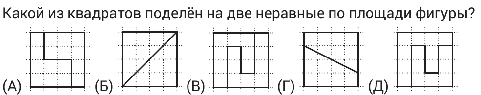

ОДНА ЗАДАЧА — МАЛЕНЬКОЕ ОТКРЫТИЕ
Квадрат с секретом
Пять рисунков. Две части. Найдём тот, где площади разные.
← → шаги · пробел — показ / пауза
ЧТО МЫ ТРЕНИРУЕМСравнивать по площади,
Сравнивать по площади,
даже если формы разные.
Урок посвящён только первой задаче. Сначала попробуй решить сам, а затем посмотри, как клеточки помогают проверить догадку.
4 × 4клетки открытий
Оригинал задачи и источники

Перерисованные схемы сверены со всеми пятью рисунками официального варианта. Официальный ответ — Д. Подсчёт площадей 7 и 9 клеток показан в этом уроке.
Полный официальный вариант (PDF) · Официальные решения (PDF)